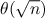
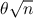

SICP Упражнения 1.20, 1.21, 1.22, 1.23, 1.24
Упражнение 1.20
Процесс который генерируется процедурой естественно зависит от правил интерпритатора. Как пример возьмем итеративную процецудуру нахождения наибольшего общего делителя приведенного выше. Предположим мы интерпритируем это процедуру используя "нормамальный порядок выполнения". Используя метод подстановки проиллюстрируйте процесс вычисления (gcd 206 40) и указать "reminder" операции которые реально выполняются. Сколько таких операций выполнится при "нормальном порядке" и сколько при "апликативном".
1 ;; нормальный порядок 2 (gcd 206 40) 3 (if (= 40 0)) 4 (gcd 40 (remainder 206 40)) 5 (if (= (remainder 206 40) 0)) ; 6 + 1 раз 6 (if (= 6 0)) 7 (gcd (remainder 206 40) (remainder 40 (remainder 206 40))) 8 (if (= (remainder 40 (remainder 206 40)) 0)) ; 4 + 2 раза 9 (gcd (remainder 40 (remainder 206 40)) (remainder (remainder 206 40) (remainder 40 (remainder 206 40)))) 10 (if (= (remainder (remainder 206 40) (remainder 40 (remainder 206 40))) 0)) ; 2 + 4 раза 11 (gcd (remainder (remainder 206 40) (remainder 40 (remainder 206 40))) (remainder (remainder 40 (remainder 206 40)) (remainder (remainder 206 40) (remainder 40 (remainder 206 40))))) 12 (if (= (reminder (remainder 40 (remainder 206 40)) (remainder (remainder 206 40) (remainder 40 (remainder 206 40)))) 0)); 0; + 7 раз 13 (if (= 0 0) ...) 14 (remainder (remainder 206 40) (remainder 40 (remainder 206 40))) ;; 4 раза 15 ;; 18 вычислений reminder 16 ;; при апликативной форме этих вычислений всего 4
Вывод: при normal-order-evaluation 18 вызовов reminder, при applicative-order-evaluation 4.
Упражнение 1.21
Используя процедуру "smallest-divisor" Найдите наиментший делитель для 199б 1999, 19999
1 (define (smallest-divisor n) 2 (find-divisor n 2)) 3 (define (find-divisor n test-divisor) 4 (cond ((> (square test-divisor) n) n) 5 ((divides? test-divisor n) test-divisor) 6 (else (find-divisor n (+ test-divisor 1))))) 7 (define (divides? a b) 8 (= (remainder b a) 0)) 9 10 (smallest-divisor 199) ; 199 11 (smallest-divisor 1999) ; 1999 12 (smallest-divisor 19999) ; 7
Упражнение 1.22
Большинство реализаций lisp включаются примитиву runtime, которая возвращает время работы системы. Ниже написана процедура которое замеряет время теста на простоту. Используя ей, напишите процедуру search-for-primes, которая проверяет простоту последовательных нечетных целых в заданном диапазоне. Используйте её чтобы найти 3 простых > 1000; > 10 000; > 100 000; > 1 000 000. Замерьте время для проверки каждого простого числа. Так как тестирующий алгоритм имеет порядок роста , вы должны ожидать получить для время для 10 000 в больше времени чем для 1 000. Посмотрите как работает это соотношение для разных диапазонов n.
Запись кривовата, потому что нет конструкции (let или progn как в emacs lisp, просто их еще не было в курсе). Тенденция  начинает походить на оценку только с 10 000 000. До этого все данные совпадают и нет прироста.
1 (define (report-prime start-time end-time) 2 (newline) 3 (display " *** ") 4 (display start-time) 5 (display "; ") 6 (display end-time) 7 (display "; ") 8 (display (- end-time start-time))) 9 10 (define (prime? n) 11 (= n (smallest-divisor n))) 12 13 (define (search-iter from number start-time) 14 (if (not (= number 0)) 15 (if (prime? from) 16 (report-and-continue from number start-time (runtime)) 17 (search-iter (+ from 1) number start-time)))) 18 19 (define (report-and-continue from number start-time end-time) 20 (newline) 21 (display from) 22 (newline) 23 (report-prime start-time end-time) 24 (search-iter (+ from 1) (- number 1) start-time)) 25 26 (define (search-for-primes from number) 27 (search-iter from number (runtime))) 28 29 (search-for-primes 1000 3) 30 (search-for-primes 10000 3) 31 (search-for-primes 100000 3) 32 (search-for-primes 1000000 3) 33 (search-for-primes 10000000 3) 34 (search-for-primes 100000000 3)
| 1009 | 0. |
| 1013 | 1.0000000000001563e-2 |
| 1019 | 1.0000000000001563e-2 |
| 10007 | 0. |
| 10009 | .00999999999999801 |
| 10037 | 1.9999999999999574e-2 |
| 100003 | 0. |
| 100019 | 1.0000000000001563e-2 |
| 100043 | 1.9999999999999574e-2 |
| 1000003 | 0. |
| 1000033 | 1.0000000000001563e-2 |
| 1000037 | 1.9999999999999574e-2 |
| 10000019 | .00999999999999801 |
| 10000079 | .03999999999999915 |
| 10000103 | .05999999999999872 |
| 100000007 | .03999999999999915 |
| 10000079 | .08999999999999986 |
| 10000103 | .129999999999999 |
Упражнение 1.23
Процедура smallest-divisor приведенная в начале главы выполняет много ненужных проверок. После проверки деления на 2, нет смысла делить на любые другие четные. То есть значениями для проверки должны быть не 2, 3, 4, 5, 6, ..., а 2, 3, 5, 7, 9, ....
Сделайте это изменение реализовав процедуру next, которая вернет 3 если на вход получили 2, в ином случае вернет входное значение плюс два. Измените smallest-divisor используя (next test-divisor) (+ test-divisor 1).
1 (define (smallest-divisor n) 2 (find-divisor n 2)) 3 (define (next n) 4 (if (= n 2) 5 3 6 (+ n 2))) 7 (define (find-divisor n test-divisor) 8 (cond ((> (square test-divisor) n) n) 9 ((divides? test-divisor n) test-divisor) 10 (else (find-divisor n (next test-divisor))))) 11 (define (divides? a b) 12 (= (remainder b a) 0))
Повторите тест из 1.22
| 1009 | 0. |
| 1013 | 0. |
| 1019 | 1.0000000000001563e-2 |
| 10007 | 0. |
| 10009 | 0. |
| 10037 | 1.0000000000001563e-2 |
| 100003 | 0. |
| 100019 | 1.0000000000001563e-2 |
| 100043 | 1.9999999999999574e-2 |
| 1000003 | 0. |
| 1000033 | 1.0000000000001563e-2 |
| 1000037 | 2.0000000000003126e-2 |
| 10000019 | .0 |
| 10000079 | 1.9999999999999574e-2 |
| 10000103 | 3.0000000000001137e-2 |
| 100000007 | 1.9999999999999574e-2 |
| 100000037 | .05000000000000071 |
| 100000039 | .07000000000000028 |
Во многих случаях уменьшилось в два раза.
Упражнение 1.24
Измените процедуру timed-prime-test из 1.22 что бы она использовала fast-prime? (метод Ферма), протестируйте 12 чисел которые были найдены в упражнении 1.22. Сравните время проверки. Так как тест Ферма имеет порядок роста (log n), каково ожидание по времени для чисел около 1,000,000 в сравнении с числами около 1000? Подтвержают ли это ваши данные? Можете объяснить несоответствия, которые найдете?
1 (define (smallest-divisor n) 2 (find-divisor n 2)) 3 (define (next n) 4 (if (= n 2) 5 3 6 (+ n 2))) 7 (define (find-divisor n test-divisor) 8 (cond ((> (square test-divisor) n) n) 9 ((divides? test-divisor n) test-divisor) 10 (else (find-divisor n (next test-divisor))))) 11 (define (divides? a b) 12 (= (remainder b a) 0))
для диапазанов < 10,000,000 время проверки по исходному тесту было .0, поэтому я добавил еще один диапазон и протестировал сначала старую функцию timed-prime-test
1 (timed-prime-test 10000019); 1.0000000000001563e-2 2 (timed-prime-test 10000079); 1.0000000000001563e-2 3 (timed-prime-test 10000103); 1.0000000000001563e-2 4 5 (timed-prime-test 100000007); 1.9999999999999574e-2 6 (timed-prime-test 100000037); 2.0000000000003126e-2 7 (timed-prime-test 100000039); 2.0000000000003126e-2 8 9 (timed-prime-test 1000000007); .05000000000000071 10 (timed-prime-test 1000000009); .05999999999999872 11 (timed-prime-test 1000000021); .07000000000000028
результаты выполнения теста между 1 и 2 диапазоном < между 2 и 3 приближенно равны ему.
1 (timed-prime-test 10000019); 1.0000000000001563e-2 2 (timed-prime-test 10000079); 1.0000000000001563e-2 3 (timed-prime-test 10000103); 1.0000000000001563e-2 4 5 (timed-prime-test 100000007); 1.9999999999999574e-2 6 (timed-prime-test 100000037); 2.0000000000003126e-2 7 (timed-prime-test 100000039); 2.0000000000003126e-2 8 9 (timed-prime-test 1000000007); .05000000000000071 10 (timed-prime-test 1000000009); .05999999999999872 11 (timed-prime-test 1000000021); .07000000000000028
после этого переписал через fast-prime, время теста зависит от количества проверок
1 ; c 10 проверками 2 (timed-prime-test 10000019); 0. 3 (timed-prime-test 10000079); 0. 4 (timed-prime-test 10000103); .00999999999999801 5 6 (timed-prime-test 100000007); 0. 7 (timed-prime-test 100000037); .00999999999999801 8 (timed-prime-test 100000039); .00999999999999801 9 10 (timed-prime-test 1000000007); 1.0000000000001563e-2 11 (timed-prime-test 1000000009); 1.0000000000001563e-2 12 (timed-prime-test 1000000021); 1.0000000000001563e-2 13 14 ; с 1000 проверками 15 (timed-prime-test 10000019); .1999999999999993 16 (timed-prime-test 10000079); .20000000000000284 17 (timed-prime-test 10000103); .21999999999999886 18 19 (timed-prime-test 100000007); .23000000000000043 20 (timed-prime-test 100000037); .23999999999999844 21 (timed-prime-test 100000039); .240000000000002 22 23 (timed-prime-test 1000000007); .2699999999999996 24 (timed-prime-test 1000000009); .26000000000000156 25 (timed-prime-test 1000000021); .259999999999998
оба тесты похожи на линейный прирост времени.